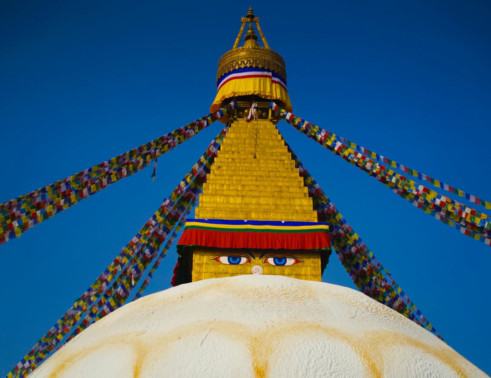
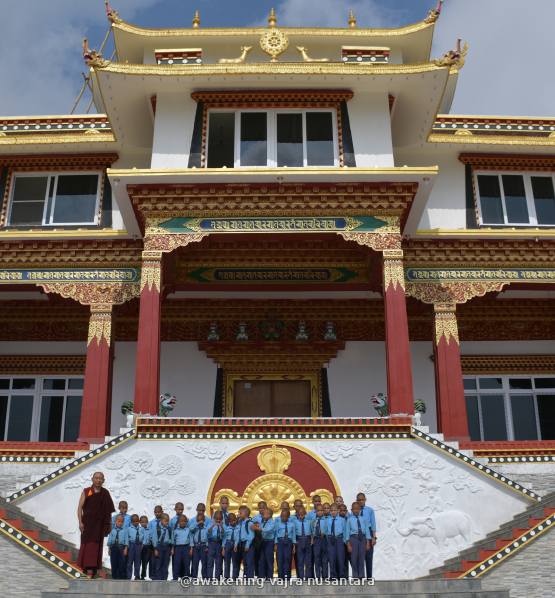
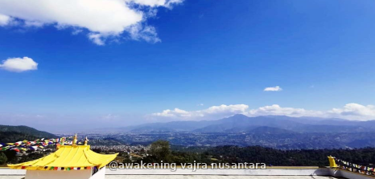
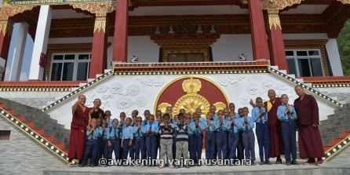
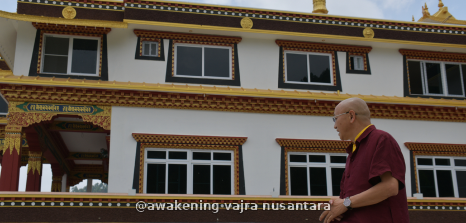
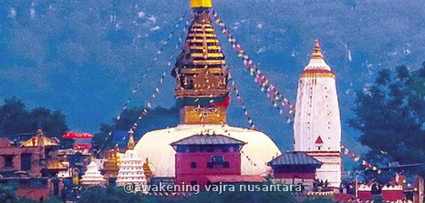
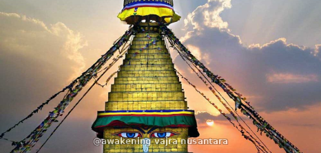
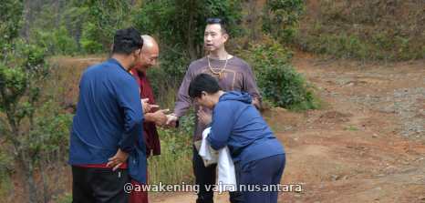
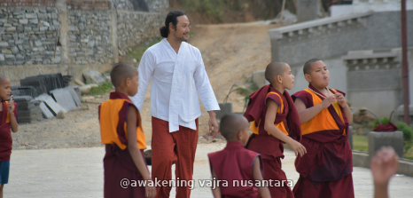
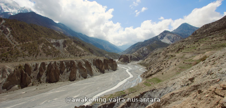

Daerah Lama Gaun, Kathmandu — sebuah tempat di kaki pegunungan Himalaya yang telah lama dikenal sebagai surga para yogi dan guru spiritual. Dari pelataran biaranya, kamu dapat menyaksikan keindahan gunung Everest di kejauhan saat cuaca cerah. Tahun ini, perjalanan ini membawa sesuatu yang sangat istimewa: kamu akan menjadi saksi langsung Grand Opening Biara Lama Gaun Tashi Rapten, sebuah momen bersejarah yang dihadiri oleh 700 biksu dari seluruh penjuru dunia. Sebuah pengalaman yang mungkin hanya terjadi sekali dalam seumur hidup.
Gyalten Khen Rinpoche — pemimpin spiritual Awakening Vajra International dan kepala biara Lama Gaun Tashi Rapten — berada di lokasi pada saat kita datang kesana.
Kamu akan tinggal di dalam biara. Ini bukan sekadar wisata — ini adalah kesempatan untuk merevitalisasi diri, memperbarui energi, dan pulang membawa sesuatu yang jauh lebih dalam dari sekadar kenangan.


Soekarno Hatta Airport - Kuala Lumpur (transit) - Kathmandu Airport - Biara Lama Gaun
-Peserta dari Indonesia berangkat dari Bandara Soekarno-Hatta, Jakarta. Peserta dari Singapore berangkat dari Bandara Changi. Semua menuju Bandara Internasional Tribhuvan, Kathmandu.
-Setibanya di Kathmandu, kita akan dijemput bersama menuju Biara Lama Gaun melewati kota Kathmandu (~1 jam perjalanan darat).
-Tiba di biara, makan malam bersama, dan langsung beristirahat.

“Opening talk” dengan Khen Rinpoche - dilanjutkan kegiatan di seputar biara - serta kunjungan ke berbagai spot spot spiritual seperti Gua Asura, Self-Arising Tara, dan Vajrayogini Temple.
-Sarapan bersama di biara.
-Pertemuan dengan Gyalten Khen Rinpoche (offering katha dan sesi pengenalan): beliau akan menjelaskan manfaat perjalanan ini, kaitannya dengan latihan meditasi, kunjungan ke situs-situs suci, dan mengapa ini akan berpengaruh signifikan dalam kehidupan kita.
-Tour keliling biara, mengenal kehidupan sehari-hari di biara, aktivitas para samanera, serta ruang-ruang retreat mandiri para lama yang hanya keluar sebulan sekali untuk mengambil bahan makanan.
-Makan siang bersama Khen Rinpoche.
-Kunjungan ke Gua Asura, Self-Arising Tara (puja 21 Tara & berdana), dan Vajrayogini Temple.
-Makan malam di biara.

Menerima teaching dan meditasi bersama Khen Rinpoche serta berpartisipasi dalam Tsog puja - sebuah ritual persembahan bersama sebagai bentuk pengumpulan kebajikan dan pemurnian karma.
-Sarapan di biara.
-Teaching dan meditasi bersama Khen Rinpoche.
-Makan siang.
-Retret kecil (mini retreat) — merasakan sedikit gambaran kehidupan seorang yogi, waktu hening untuk mendalami praktik secara personal.
-Tsog puja — ritual persembahan bersama sebagai bentuk pengumpulan kebajikan dan pemurnian karma.

Menjalankan 21 Tara puja dengan Khen Rinpoche, yaitu sebuah ritual persembahan kepada 21 aspek Tara sebagai simbol perlindungan dan welas asih.
-Sarapan di biara.
-Teaching dan meditasi bersama Khen Rinpoche.
-Makan siang.
-Retret kecil (mini retreat) — melanjutkan pendalaman praktik dalam keheningan.
-21 Tara puja — ritual persembahan kepada 21 aspek Tara sebagai simbol perlindungan dan welas asih.

Hari ini setelah makan pagi kita akan melakukan Meditasi jalan - setelah makan siang, hari akan dilanjutkan dengan kunjungan ke Boudhanath, situs warisan UNESCO.
-Setelah sarapan, meditasi jalan menuju daerah sekitar puncak terdekat — sebuah latihan penting untuk memahami bahwa meditasi tidak hanya soal duduk bersila.
-Kunjungan ke Stupa Boudhanath, situs warisan UNESCO. Di sini kita melakukan pradakshina, metode sederhana namun ampuh untuk mengumpulkan kebajikan, seperti yang dijelaskan Khen Rinpoche di hari pertama.
-Coffee break sekaligus waktu belanja — surga bagi pecinta souvenir antik: rupang, liontin, kalung mala, mangkuk persembahan, dan lainnya, dari yang sederhana hingga istimewa.
-Makan malam sebelum kembali ke biara, beristirahat sambil menikmati energi positif yang masih terbawa dari hari ini.

Di hari ini kegiatan akan mengikuti arahan dari Khen Rinpoche dalam pelaksanaan meditasi singkat dengan objek sunyata.
-Setelah sarapan, kunjungan ke Gua Asura, Self-Arising Tara, dan Vajrayogini Temple. Gua Asura adalah tempat Guru Padmasambhava mencapai pencerahan — di sini kita melakukan meditasi singkat dengan objek sunyata, untuk menorehkan jejak kuat di batin agar kelak, bila karma mendukung, kita dapat merealisasikan sunyata secara langsung dalam kehidupan ini.
-Doa singkat di tempat munculnya relief Tara Hijau secara ajaib — Arya Tara adalah perwujudan Buddha dalam aspek ketangkasan untuk memberi pertolongan.
-Kunjungan ke Vajrayogini Temple yang sangat sakral.
-Makan siang di kota Kathmandu.
-Kunjungan ke Stupa Swayambhunath — situs sakral yang wajib dikunjungi para praktisi, sekaligus tempat memandang kota Kathmandu dari atas bukit.

Penyaksian Grand Opening Biara Lama Gaun Tashi Rapten, dihadiri oleh 700 biksu
-Grand Opening Biara Lama Gaun Tashi Rapten, dihadiri oleh 700 biksu
-Menyaksikan rangkaian upacara sakral — puja, chanting, dan pemberkatan (blessing) dari para biksu dan lama senior.
-Momen bersejarah yang jarang terjadi — sebuah kehormatan dapat menjadi saksi langsung peresmian biara ini.

Berbagi momen perpisahan dan kembali menuju kota asal masing-masing
-Sarapan pagi bersama di biara sebagai momen perpisahan.
-Perjalanan menuju Bandara Internasional Tribhuvan, Kathmandu.
-Kembali menuju kota asal masing-masing (Jakarta / Singapore), membawa pulang energi dan pengalaman yang telah diperoleh selama perjalanan ini.